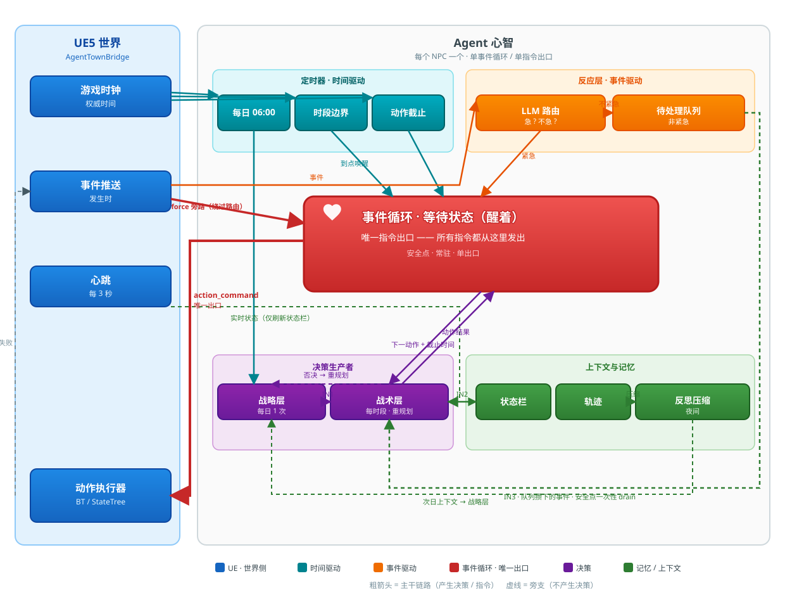
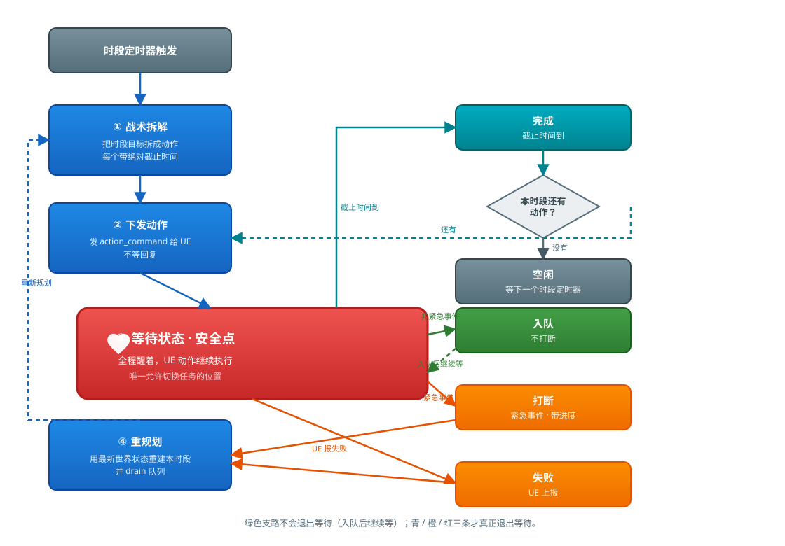
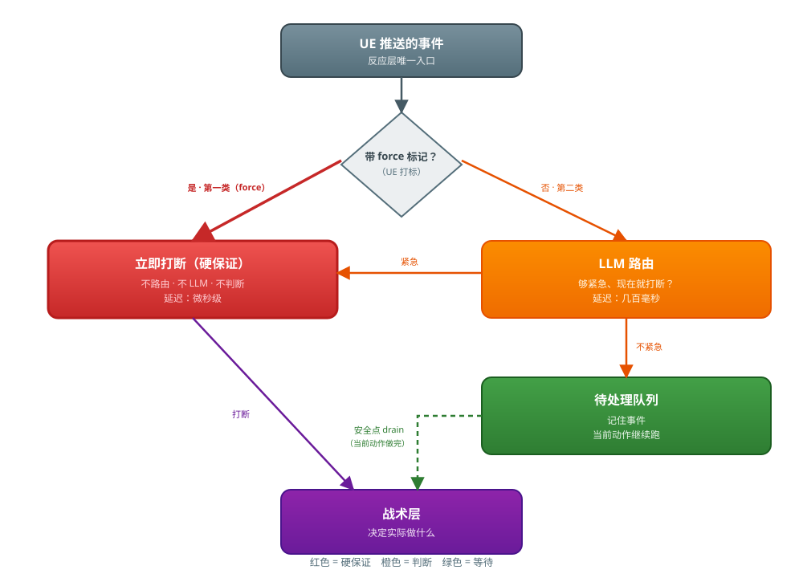
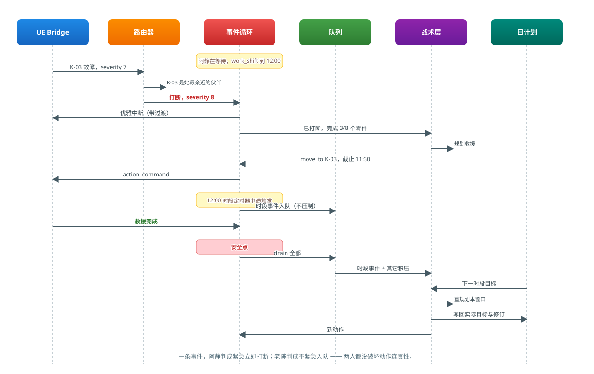
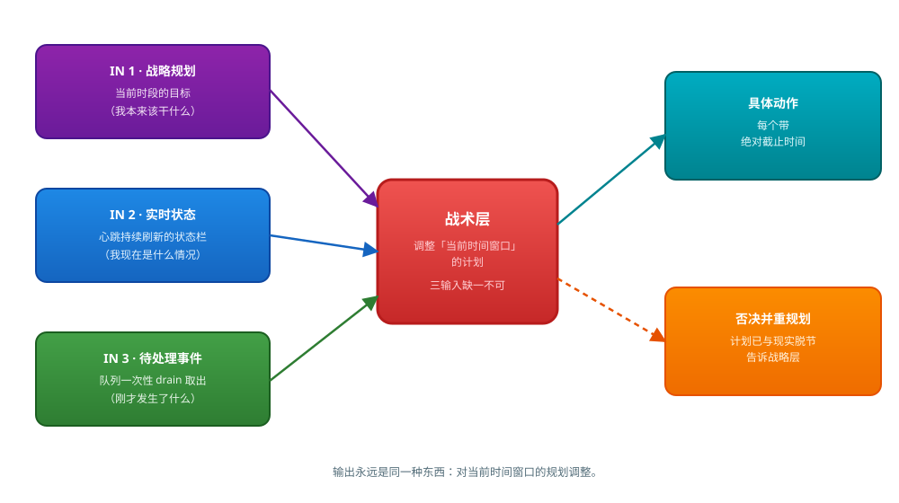

AgentTown 事件驱动异步 Agent - 设计文档
Go Agent 进程侧的核心运转机制。描述 NPC 心智如何在「时间驱动主干 + 事件驱动打断」的双重节奏下运转，以及它与 UE5
AgentTownBridge插件的协作边界。
>
配套阅读：
AgentTown_Design.md（总体方案）、AgentTown_WorldKB_Design.md（世界字典）、AgentTown_CommProtocol_Values.md（通信协议）。
目录
一、设计目标
让 NPC 具备「有计划地过完一天，但随时能被世界打断」的能力。这两件事天然冲突：
| 目标 | 需要什么 | 冲突点 |
|---|---|---|
| 行为连贯 | 长时间稳定执行计划 | 计划一旦制定就想一路跑到底 |
| 反应真实 | 随时响应突发事件 | 打断会破坏计划的连贯性 |
解法：用时间驱动主干保证连贯，用事件驱动打断保证真实，两者在「安全点」交汇。
1.1 一句话概括
早上 6 点规划一天 → 每个时段到点触发战术拆解 → 动作下发给 UE 后进入持续开放的等待状态 → 期间可被 UE 事件唤醒打断 → 打断处理完重新规划 → 夜里压缩反思 → 次日带着经验重新开始。
1.2 两条正交的轴
系统里存在两套分层，描述的是不同维度，理解这一点是读懂后文的前提：
| 轴 | 内容 | 回答什么问题 |
|---|---|---|
| 时间尺度轴 | 战略层 / 战术层 / 反应层 / 执行层 | 决策在多长的时间跨度上生效 |
| 并发纪律轴 | 安全点 / 打断 / 入队 | 事件到达时是当场处理还是攒着 |
设计铁律：每个 NPC 只有一个事件循环、一个指令出口。三层不是三个并发的指令发送者，而是同一个循环里的三种决策生产者。否则会出现战术层和反应层同时往 UE 发指令、NPC 走一半被拽向另一个方向的问题。
二、整体运转
粗箭头是主干链路，虚线是不产生决策的旁支。红色的事件循环是整个系统的心脏，所有指令都从它这一个出口发出。

看这张图的三个要点：
| 看什么 | 图上的表现 |
|---|---|
| 两个驱动源 | 青色 TIMERS 是时间驱动，橙色 REACTIVE LAYER 是事件驱动，两者都汇入红色的 EVENT LOOP |
| 唯一出口 | 只有 EVENT LOOP 有一条 action_command 指向 UE，其余模块都够不着 UE |
| 战术层的三个输入 | 图上标了 IN 1 / IN 2 / IN 3——战略层给时段目标，状态栏给实时状态，队列给攒下的非紧急事件 |
2.1 各部分职责
| 模块 | 触发方式 | 频次 | 产出 |
|---|---|---|---|
| 战略层 | 每日 06:00 定时器 | 1 次/天 | 日计划：6~10 个带绝对起止时间的时段任务 |
| 战术层 | 时段定时器 / 重规划请求 / 安全点消费队列 | 每时段 1~3 次 | 一串带绝对截止时间的动作 |
| 反应层 | UE 推送事件 | 与事件密度相关 | 只有两种结论：打断 / 入队 |
| 事件循环 | 常驻 | — | 下发动作、等待、在安全点切换 |
| 反思压缩 | 睡眠时段 | 1 次/天 | 当日摘要 + 反思 + 关系更新 |
三、Agent 循环
3.1 循环本身
这是整个系统的心脏。动作下发给 UE 之后，Agent 并不是「睡在那里等时间到」，而是进入一个持续开放的等待状态，随时可被四类信号唤醒。
红色的 WAITING STATE 是循环的中心。绿色那条支路不会让它退出（入队后继续等），只有另外三条才会真正退出等待。

这张图里最重要的一点：中间那个 WAITING STATE 不是"阻塞等待"，而是"醒着等待"。UE 那边的 work_shift 可能要执行 3 小时游戏时间，但 Agent 在这 3 小时里全程醒着，任何事件到达都能当场响应。
四个出口的对比：
| 唤醒原因 | 退出等待吗 | 下一步 |
|---|---|---|
| 到达截止时间 | 是 | 本时段还有动作就继续下发，没有就空闲 |
| 紧急事件 | 是 | 带着进度返回，转去重规划 |
| UE 报告动作失败 | 是 | 同上，转去重规划 |
| 非紧急事件 | 否 | 入队，回到等待，留到下一个安全点一并处理 |
3.2 安全点
安全点 = 上面那个 WAITING STATE。它是本系统中唯一允许切换任务的位置，因为它同时满足两个条件：
| 维度 | 含义 | 违反的后果 |
|---|---|---|
| 逻辑安全 | LLM 轨迹格式完整，动作调用与结果严格配对 | 模型看到残缺轨迹，产生幻觉 |
| 视觉安全 | UE 侧处于状态转换边界 | 动画硬切，玩家一眼看出破绽 |
即使是紧急打断，"立即"也意味着下一个可中断点，不是当前帧。UE 侧应提供短促的中断过渡（放下工具、起身），复用现有
PreemptForDialogue的优雅中断路径，而不是硬切。
3.3 唯一的盲区
严格说，只有一个窗口不在安全点上：战术层调用 LLM 思考下一步的那几秒。这期间 Agent 在等模型返回，不在等待状态里。
处理方式：紧急事件到达时直接掐掉正在飞的 LLM 请求，丢弃这半截思考，把新事件加进去重新想一轮。代价是浪费一次调用，但没有任何窗口是真正不可打断的。
3.4 动作结果：隐藏机制，暴露结果
UE 提供的工具大多没有自然完成态——work_shift 不是"耗时但终将返回"，而是"无限期直到被叫停"。因此每个动作都带一个绝对截止时间，由 Agent 侧主动收尾。
LLM 不需要知道动作是被 Agent 掐断的还是 UE 自己结束的（机制），但必须知道结果：
| 信息 | 是否给 LLM | 理由 |
|---|---|---|
| 谁掐断的定时器 | 否 | 机制细节，徒增噪音 |
| 干成了没有 | 是 | 决定下一步是继续、重规划还是报错 |
| 干了多久 | 是 | 时间感知 |
| 完成到什么程度 | 是 | 重规划的事实依据 |
| 为什么停的 | 是 | 直接影响后续决策与情绪 |
若三种结束方式都返回同一个"完成"，模型会心满意足地走下一个动作——这是最典型的"误以为任务已完成"的幻觉来源。
3.5 时间用绝对截止，不用相对时长
每次战术层 LLM 往返要 5~10 秒真实时间，串联多个动作后相对时长会悄悄超出时段边界，且状态栏与墙上时钟会逐渐不一致。
并且截止时间是推导的，不是 LLM 生成的。LLM 只表达意图（"干到时段结束"、"干一半去看看小柯"），由执行层拿日计划里该时段的结束时刻解析成绝对时刻。这样避免了 LLM 填出的多个时长之和超出时段却无人裁决。
四、反应层
反应层只有一个入口：UE 主动下发的事件。它只回答一个问题——这件事要不要打断 NPC 手上正在做的事。
它不做规划，不管连续状态，也不定时轮询。规划是战术层的事，连续状态走心跳（都在第五章）。反应层的全部职责就是给每个进来的事件盖一个章：打断，或者入队。
4.1 两类事件

整个反应层就是这张图。红色是硬保证，橙色是判断，绿色是等待。
| 第一类 | 第二类 | |
|---|---|---|
| 谁认定紧急 | UE，事件自带 force |
Agent，路由模型判 |
| 走不走 LLM | 不走 | 走一次轻量路由 |
| 延迟 | 微秒级 | 几百毫秒 |
| 可能的结果 | 只有一种：立即打断 | 两种：打断，或入队 |
4.2 第一类：force 强制打断
force 是 UE 对 Agent 的一条硬保证通道：只要打了这个标记，从消息到达到动作中断，中间不经过路由、没有任何 LLM、不做任何权衡。延迟是微秒级。
这类事件的「紧急」是事实，不是判断，所以没什么可判的：
- NPC 被攻击、NPC 死亡
- 剧情强制指令
- Director 的高优先级注入
- 调试命令
打不打这个标记由 UE 侧硬编码。有一点必须守住：Agent 侧不能有任何逻辑能否决 force——没有阈值、没有预算、没有"最近打断太频繁了"的抑制。一旦加了这些，这条保证就不成立了。
4.3 第二类：交给路由判
其余所有事件——同伴故障、能量跨过阈值、有人搭话、动作失败、小八又在广播八卦——都走这条路，由一个轻量模型判定紧急度。
路由器只输出要不要打断，不做任务规划：
{ interrupt: true, severity: 8, reason: "K-03 是阿静最亲近的伙伴" }规划留给战术层——它本来就握着工具表、实时状态和 World KB，没必要在紧急路径上重复造一套。这条路上只放最小的模型。
紧急度由 Agent 判，不由 UE 判
这是第二类存在的全部意义。UE 只上报客观事实和客观严重度，急不急由 Agent 结合性格、关系、距离自己判。
同一条「K-03 故障」推给所有 NPC：阿静判成紧急（K-03 是她最亲近的伙伴），立刻扔下手上的活；老陈判成不紧急，入队，等这批装配做完再说。一条事件，十个 NPC，十种反应——这正是项目要的涌现效果。
判不动的时候倾向入队
路由模型会犯错，设计上让它偏向保守：拿不准就入队。
因为代价不对称——该打断没打断，NPC 显得反应迟钝几分钟；不该打断却打断了，NPC 显得神经质、日程被搅乱，而且每次误判都要拖出一整轮重规划。前者是小瑕疵，后者会累积成行为崩坏。
4.4 入队的事件在安全点一次性交出去
不紧急不等于不管。入队的事件会在下一个安全点——也就是当前动作执行完成的那一刻——被一次性全部取出，和另外两样东西一起交给战术层：
| 一起交出去的 | 为什么必须带 |
|---|---|
| 队列里攒的所有事件 | 这本身就是决策依据 |
| 战略层下一阶段的规划 | 不然 NPC 会为了处理这些事件把后面的正事忘了 |
| 当前 NPC 的实时状态 | 事件发生的那一刻和现在可能已经不是一回事了 |
一次性交比「一个个处理」好在哪：假设两小时里攒了「小柯问你借工具」「小八说食堂换菜了」「能量掉到 35」三件事。逐个处理会产生三次决策、三段可能互相打架的行为；一次性交给 LLM，它能看到全貌，输出一个统筹过的安排——顺路去食堂，路上把工具给小柯，回来前充个电。
所以队列的正确用法是 drain 全部，不是 pop 一个。
4.5 时段切换也走队列
一个容易写错的地方：反应任务执行期间，战略层的时段定时器到点了怎么办？
| 实现方式 | 问题 |
|---|---|
| ❌ 压制：反应期间时段定时器失效 | 要给定时器写特殊分支；反应任务无界时会吞掉整个后续时段 |
| ✅ 入队：时段事件进同一个队列，等安全点消费 | 与所有非紧急事件共用一套模型，反应任务结束后自然触发重规划 |
两者外在行为一致（都是等反应任务做完再切时段），但「入队」不需要任何特殊逻辑。
防止打断链失控的两条护栏：
- 反应任务同样带截止时间，不能无界
- 反应打断反应，要求严重度严格更高
4.6 例子：K-03 故障
阿静（H-03）正在车间装配，时段是 09:00-12:00。

同一条事件同时推给老陈（H-01），走向完全不同：路由判出「与 K-03 关系一般，当前这批装配还没做完」→ 不紧急，入队。老陈继续装配，直到这批件做完，才在安全点顺带看了一眼——K-03 已经修好了，什么都不用做。
一条事件，两种反应，而且都没有破坏任何人的动作连贯性。
4.7 反应层不负责的三件事
划清边界，因为这三件事最容易被误塞进反应层：
| 事情 | 实际归谁 | 为什么不在反应层 |
|---|---|---|
| 心跳送来的位置、能量数值 | 战术层的输入 | 它没有「发生的那一刻」，不是事件，永远不造成打断 |
| 决定具体做什么、做多久 | 战术层 | 反应层只盖章，不规划 |
| 「要不要顺路去跟老陈搭句话」 | 战术层 | 没有触发源，也不需要及时性 |
反应层的代码量应该很小：一个 force 分支，一次路由调用，一个队列。它做的事情越少，那条 force 通道就越可靠。
五、战术层
战术层是真正做决定的地方。反应层只决定「要不要现在打断」，具体做什么、按什么顺序做、做到什么时候，全在这一层。
5.1 三个输入
每次战术层被唤起，它同时看三样东西：

| 输入 | 来源 | 回答什么问题 |
|---|---|---|
| 战略层规划 | 早上 6 点生成的日计划里，当前时段的目标 | 我本来应该干什么 |
| 实时状态 | 心跳持续刷新的状态栏 | 我现在实际是什么情况 |
| 非紧急事件 | 反应层的队列，在安全点一次性取出 | 刚才这段时间世界上发生了什么 |
输出永远是同一种东西：对当前这个时间窗口的规划调整。缺任何一个输入，调整都会跑偏——只看规划就是开环执行，只看状态就没了目标，只看事件就变成纯应激。
5.2 心跳：状态的来源，不是决策的触发器
心跳一直在跑。UE 按固定周期把位置、朝向、能量数值这类连续变化的量发过来，Agent 收到后只刷新状态栏，不做判断、不调 LLM、不触发任何反应。
它属于这一层，不属于反应层。区别在于：
| 心跳 | 事件 | |
|---|---|---|
| 有没有「发生的那一刻」 | 没有，一直在变 | 有 |
| 能不能造成打断 | 永远不能 | 能 |
| 到达时做什么 | 覆盖状态栏，仅此而已 | 进反应层判断 |
为什么连续量不能做成事件？因为位置每帧都在变，做成事件就是每帧一个事件，比轮询还糟。
但要分清：连续量本身走心跳，连续量上的「跨越」走事件。
| 情况 | 走哪条 |
|---|---|
| 能量从 62 掉到 61.2 | 心跳，没人关心 |
| 能量从 20.3 掉到 19.8，跨过 20 这条线 | 事件，立刻推 |
| 位置从 A 点移到 B 点 | 心跳 |
| 走出走廊、进入档案馆 | 事件，立刻推 |
UE 侧实现要点：阈值事件必须是边沿触发（跨越那一刻推一次），不能是电平触发（低于阈值就一直推）。现有的
LastReportedPhysicalState本来用于算 delta，改为做跨越检测即可。
5.3 顺手判断是免费的
有些判断没有任何触发源：「我看见老陈就在隔壁工位，今天心情不错，要不要去搭句话」——老陈一直在那儿，心情是内部状态，没有任何 UE 事件能表示「现在适合社交」。
但它也不需要及时性，晚 20 分钟去说这句话没有任何损失。
所以不为它单开定时器、也不占反应层的通道，而是折进战术层本来就要做的那次决策里，把周围环境一起塞进上下文：
你在主生产车间。时间 11:30，本时段还剩 30 分钟。
附近: 老陈（元老默契，就在隔壁工位）正在装配
滚滚（长辈对幼崽，5 米外）正在滚动
心情: 松了口气（刚修好 K-03）LLM 可能就顺手输出了「先去跟老陈说一句 K-03 没事了，再回工位」。边际成本只是多几十个 token——因为那次 LLM 调用反正躲不掉。
5.4 三个输入在时间轴上
阿静 09:00-12:00 这三小时：
09:00 ──────────────────────────────────────────────► 12:00
work_shift 在 UE 侧持续执行，Agent 全程醒着等待
心跳: ● ● ● ● ● ● ● ● ● ● ● ● ● ● ● ● ● ● ● ● 每 3s，只刷状态栏
▲
事件: 10:47 K-03 故障 → 打断
安全点: ↑ ↑ ↑
09:00 11:30 11:32
战术拆解 重规划 + 下个动作
顺手判要不要搭话心跳一直在跑但不触发任何决策；事件只在真的发生时来一次；模糊判断只在那几个本来就要调 LLM 的点上顺手做掉。
这三小时里阿静的 LLM 调用次数：战术拆解 1 次 + 路由 1 次 + 救援规划 1 次 + 回来重规划 1 次 = 4 次。如果反应层做成每 5 秒轮询一次，同样这三小时是 2160 次。
5.5 战术层可以否决战略层
早上 6 点做的规划不可能预见 6 小时后的实际状态。若计划说「充电」而当前能量 92，战术层应当就地重规划。这是把开环控制变成闭环控制——也是三个输入必须同时看的直接后果。
否决的三条约束（防止日程沦为装饰）：
| 约束 | 规则 |
|---|---|
| 范围 | 只能改时段内的做法，不能改时段的目标类别 |
| 记录 | 必须写回日计划的实际目标与修订记录 |
| 反馈 | 否决理由进入当晚反思，影响次日规划质量 |
日计划是可变文档。否决后不写回，状态栏会说「当前战略任务：充电」而 NPC 在干别的，下个时段的决策还基于已作废的计划。
六、一天的闭环

6.1 状态栏
始终追加在上下文最末尾——前缀保持稳定，每轮都变的内容放尾部，缓存失效的只有尾巴。
=== 当前状态 ===
游戏时间: Day 12 10:47:03
物理: 能量 62 | 疲劳 31 | 关节磨损 78 | 余额 340
战略: [3/7] 09:00-12:00 车间装配，尽量不出错 (还剩 73 分钟)
战术: [2/4] work_shift(workbench_01) → 已执行 47 分钟
未完成: 装配任务被中断，已完成 3/8 个零件，因 K-03 故障离开
上次动作结束原因: 被打断 (K-03 在档案馆发生故障)| 字段 | 作用 | 缺失的后果 |
|---|---|---|
| 时段剩余时间 | 判断时间压力 | 无法决定「还来不来得及顺路去趟档案馆」 |
| 已执行时长 | 感知当前进度 | 反复重启同一动作 |
| 未完成任务槽 | 承载被中断任务的事实 | 重规划时靠模型回忆，触发幻觉 |
| 上次结束原因 | 区分成功/打断/失败 | 把失败当成功继续往下走 |
6.2 打断后重新规划，而不是恢复原任务
NPC 救完 K-03 回来，半小时已过去，原来「装配到 12 点」的计划本身就该重算。
这个选择还带来一个额外好处：天然规避幻觉。既然不需要模型记住那个半截任务，也就不存在它编造完成状态的机会。
6.3 睡眠期的反思
最后一个时段（如 22:00-07:00）期间异步执行，不阻塞世界推进：
| 阶段 | 输入 | 输出 |
|---|---|---|
| 反思 | 当日轨迹 + 否决记录 | 若干条对角色认知的更新 |
| 压缩 | 当日完整轨迹 | 摘要化的当日经历 |
| 关系更新 | 当日社交事件 | 关系图增量 |
否决记录是最有价值的学习信号：每次否决都说明战略层对世界的建模有偏差，归纳后喂给次日战略层，形成「规划 → 执行 → 偏差 → 修正规划」的闭环。
七、关键约束
7.1 TimeScale
游戏时钟按 真实时间 × TimeScale 推进，这个倍率直接决定本设计是否成立：
| TimeScale | 3 小时时段的真实时长 | 战术层 LLM 往返占比 | 结论 |
|---|---|---|---|
| 1 | 3 小时 | 可忽略 | 宽裕 |
| 20 | 9 分钟 | 约 1% | 舒适 |
| 60 | 3 分钟 | 约 5% | 需流水线化 |
| 200 | 54 秒 | 约 18% | 不可行 |
应对：所有截止时间必须是游戏时间；倍率较高时流水线化——在当前时段执行期间预先算好下个时段的拆解，别等定时器到点才开始想。
7.2 并发抖动
10 个 NPC 的时段定时器若在同一游戏时刻炸开，会产生 10 个并发战术层调用；22:00 睡眠反思同理，且单次上下文很大。
措施：给时段边界加游戏时间几十秒量级的随机抖动。不加的话，问题会以「某个 NPC 偶尔卡住」的形式零散出现，难以定位。
7.3 成本
| 调用类型 | 触发方式 | 频次（10 NPC） |
|---|---|---|
| 战略层 | 每日一次 | 10 次/天 |
| 战术层 | 时段切换 + 重规划 + 安全点消费队列 | 100~200 次/天 |
| 路由 | 每条非 force 事件一次 | 与事件密度相关 |
| 反思压缩 | 每日一次 | 10 次/天 |
成本能落在预算内的根本原因是推送：反应层的调用频次从时间函数（每 N 秒一次）变成了事件函数（有事才花钱），什么都没发生时它一分钱不花。
如果后续出现广播类事件（一条事件同时推给 10 个 NPC），可以在路由之前加一道纯逻辑的距离/关系预筛，把明显无关的 NPC 直接滤掉。这是可选优化，不是架构的一部分——只在事件密度真的成为问题时才加。
7.4 过期决策
战术层读的是某一时刻的状态，LLM 返回可能已过去数秒，此时 NPC 已移动、目标可能被占。
措施：每条下发的指令携带其依据的事件序号，UE 侧校验；过期则丢弃并请求重新决策。这比让 LLM 自己发现「咦目标不在了」要可靠得多。
八、UE 侧需要提供什么
8.1 现有能力
AgentTownBridge 已具备大部分零件：
| 能力 | 现有实现 | 本设计中的角色 |
|---|---|---|
| 权威时钟 | UAgentGameTimeSubsystem |
所有定时器与截止时间的基准 |
| 区域事件 | OnEnterZone / OnExitZone |
事件源 |
| 主动感知 | PackAndSendPerception |
事件载荷来源 |
| 优雅中断 | PreemptForDialogue |
打断的执行路径 |
| BT 挂起 | ActionOverrideTag |
动作切换机制 |
| 动作执行 | UActionExecutor |
指令落地 |
| 物理状态 | GetPhysicalStateSnapshot |
心跳载荷，刷新状态栏 |
8.2 需要新增
| 新增项 | 位置 | 说明 |
|---|---|---|
| 阈值事件 | RobotAgentComponent |
能量/疲劳/关节磨损/余额跨阈值时立即推送，边沿触发 |
| force 标记 | 通信协议 | 强制打断事件的旁路标识 |
| 动作进度上报 | UActionExecutor |
支撑「装配了 3/8 个零件」 |
| 动作失败事件 | UActionExecutor |
目标不可达、SmartObject 被占用等 |
| 中断过渡 | StateTree / BT | 紧急打断时的短促收尾动画 |
| 序号校验 | OnEnvelopeReceived |
丢弃基于过期状态的指令 |
8.3 推送清单
UE 不推的东西，Agent 永远看不见。改用推送模式后，责任转移到 UE 侧，需要枚举清楚：
| 类别 | 具体事件 |
|---|---|
| 物理跨阈值 | 能量、疲劳、关节磨损、余额跨过预设线 |
| 空间 | 进出 zone、进入某 NPC 的对话距离 |
| 社交 | 对话邀请、听到广播、被点名 |
| 动作异常 | 目标不可达、SmartObject 被占用、动作失败 |
| 世界事件 | Director 注入的故障与环境事件 |
| 强制（带 force） | 被攻击、死亡、剧情指令、调试命令 |
九、总结
9.1 核心设计原则
- 单一事件循环、单一指令出口——三层是决策生产者，不是并发的指令发送者
- 等待状态是醒着的——动作执行期间安全点持续开放，不是「等动作做完才能响应」
- 反应层只有两类事件——
force强制打断，其余交路由判紧急；结果只有打断或入队 force不可否决——UE 打了标记就必须断，Agent 侧不能有任何抑制逻辑- 紧急度由 Agent 判——UE 只报客观事实，同一条事件在不同 NPC 身上应有不同结果
- 路由与规划分离——紧急路径上只放最小的模型，规划留给战术层
- 队列在安全点一次性 drain——让 LLM 看到全貌，输出统筹过的安排
- 心跳不属于反应层——它是战术层的状态输入，永远不造成打断
- 战术层同时看三个输入——战略规划、实时状态、攒下的事件，缺一个就会跑偏
- 绝对截止而非相对时长——由计划推导，不由 LLM 生成
- 打断后重新规划而非恢复——活世界的正确选择，且天然规避幻觉
- 计划是可变文档——否决必须写回，并成为次日的学习信号
9.2 与朴素实现的差别
| 维度 | 朴素实现 | 本设计 |
|---|---|---|
| 反应层触发 | 每 5 秒调一次 LLM 分析 | UE 推送，有事才判 |
| 反应层成本 | 约 17 万次/天（10 NPC） | 与事件密度相关，静默时为零 |
| 动作执行 | 睡眠等待截止时间 | 醒着等待，随时可唤醒 |
| 不紧急事件 | 丢掉或立刻处理 | 入队，安全点一次性统筹 |
| 时段切换 | 反应期间压制定时器 | 入队，走与其它事件同一套模型 |
| 反应层模型职责 | 路由 + 规划 | 仅判紧急，不规划 |
| 强制打断保证 | 无（要等下次扫描） | 微秒级，无 LLM 参与，不可否决 |
| 心跳的作用 | 混在反应逻辑里 | 只刷状态栏，是战术层的输入 |
不做这些改造，系统会是一个做得很讲究的定时任务调度器；改造之后，它才是事件驱动的异步 Agent。
本文档作为 Go Agent 进程实现的单一真理参考点。